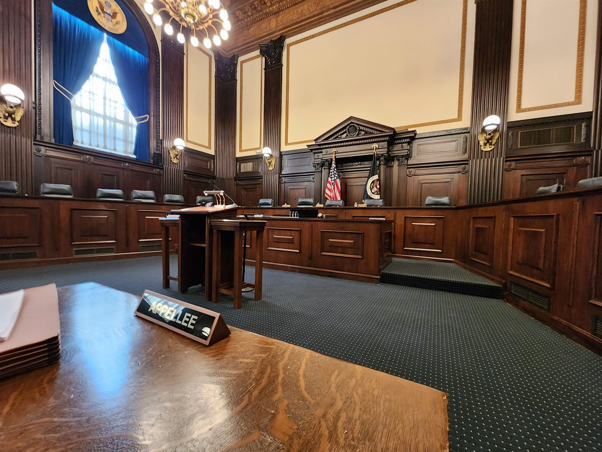

Hot Bench Prep
Upload the brief and get twenty questions the court is most likely to put to you, at the difficulty you choose.
Generate questionsMay it please the court…
Ethical appellate AI tools
written by appellate lawyers… for appellate lawyers.

Preparing for oral argument? Try the world's first AI-powered moot court simulator. Upload your brief (and your opponent's) and select your court from a panel of 20 current and historic SCOTUS justices. Use your microphone to argue your case, and the justices will interrupt with realistic questions based on their judicial philosophies. Receive live critiques and a post-argument transcript with suggestions to improve your answers.
This isn't entering questions into ChatGPT—an appellate attorney created tens of thousands of lines of code to make this a realistic, conversational moot. You control the length of the argument, how hot the panel is, and the complexity of questions. It's the next best thing to being in the Court at a fraction of the cost of a live moot. This is the ultimate appellate advantage.
Custom prompts written by an experienced appellate attorney.
For a limited time, all tools are FREE to use and test.
The pool — 20 justices, current and historic
Fantasy Moot puts you at the lectern on historic cases and lets you make the arguments that changed history. Face the pressure of arguing for what's right while navigating the procedural hurdles that the real lawyers faced, in front of virtual versions of the real justices. As you answer questions, you'll get suggestions for better answers. At the end, receive a transcript of your argument and a critique of how you did.
Argue landmark cases such as Brown v. Board of Education and Gideon v. Wainwright before a virtual moot court.
Try Fantasy Moot for Free.Two more built on the same engine, for the parts of an appeal that happen before you ever reach the lectern.
Upload the brief and get twenty questions the court is most likely to put to you, at the difficulty you choose.
Generate questionsA first-draft oral argument outline as a Word file: the points that matter most, in order, with transitions written between them.
Build an outlineCurrently in testing and free to use.
Start a moot argument